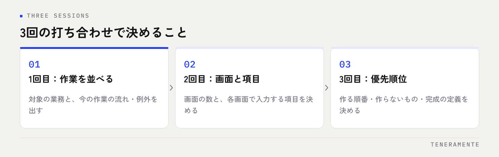

業務システムを作りたいと相談したものの、打ち合わせが何度も続いて話が前に進まない。小さな会社の要件定義でよく起きる状態です。原因は決める内容が多いことではなく、決める順番が決まっていないことにあります。3回の打ち合わせに分けて、各回で何を決めるかを先に置いておくと、話は前に進みます。
📌 この記事の結論
要件定義は「今の作業を並べる → 画面と項目を決める → 優先順位と完成の形を決める」の順に進みます。最初から完成形を描こうとせず、1回目は今やっていることをそのまま出すことに徹するのが近道です。発注側がそろえておくのは、使っている帳票と、作業の実物です。
01要件定義が長引くのは、決める順番が決まっていないから
打ち合わせが空回りするときは、だいたい同じことが起きています。「こんな機能があると便利」「あの画面も必要かもしれない」という話と、「今この作業をどうやっているか」という話が、同じ場で混ざっている状態です。
前者は希望、後者は事実です。事実が出そろう前に希望を並べると、何を作ればよいかが決まりません。逆に事実から始めると、必要な機能は自然に絞られていきます。
もうひとつの要因は、決定できる人がその場にいないことです。現場の担当者だけで集まっても、費用と優先順位の判断ができません。3回のうち少なくとも1回は、お金と期限を決められる人が入るようにしてください。頼む前に社内で決めておく項目はAIツール開発を依頼する前に決めておく7つのことに整理しています。
02打ち合わせを3回に分けると、決める順番が見える
要件定義を1回の長い会議で終わらせようとすると、たいてい決めきれずに持ち帰りが増えます。3回に分けて、各回のゴールを決めるほうが結果的に早く終わります。

3回それぞれで扱う内容は、次のように分かれます。
| 回 | 決めること | 発注側が持っていくもの |
|---|---|---|
| 1回目 | 対象の業務と、今の作業の流れ | 使っている帳票・Excel・紙の実物 |
| 2回目 | 画面の数と、入力する項目 | 1回目の内容の確認結果、項目の抜け |
| 3回目 | 優先順位・公開の範囲・完成の定義 | 予算の上限と、使い始めたい時期 |
大事なのは、後ろの回で決めることを前の回で決めようとしないことです。1回目で「この画面にはこのボタンが欲しい」と話し始めると、肝心の作業の流れが出てこないまま時間が終わります。
031回目：今やっている作業を、そのまま並べる
1回目は、理想の姿を描く場ではありません。今やっている作業を、順番どおりに並べることだけに使います。
出してほしいのは次の3つです。
- 作業の順番（誰が、何を受け取って、何を渡すか）
- 使っている書類の実物（Excel、紙の台帳、FAXの用紙まで含めて）
- 例外のパターン（「この取引先のときだけ別の処理をする」というもの）
とくに3つめが抜けると、後から作り直しになります。日常の9割を占める流れよりも、月に数回しか起きない例外のほうが、システムの形を左右することがあるためです。
きれいにまとめ直さないでください
打ち合わせのために業務フロー図を清書する必要はありません。むしろ、ふだん使っている書類をそのまま見せていただくほうが正確です。清書の過程で、例外や手書きの追記といった「実際に効いている情報」が落ちてしまいます。
042回目：画面と項目を決める
1回目で並べた作業をもとに、2回目では画面の数と、各画面で入力する項目を決めます。ここが要件定義の中心です。
項目を決めるときの判断は、ひとつだけです。その項目は、後で検索・集計に使うのか、それとも見られればよいのか。検索や集計に使うなら独立した項目にし、見るだけでよいものは備考欄にまとめます。この区別をせずに全部を独立した項目にすると、入力の手間だけが増えます。
画面の数は、作業の区切りに合わせます。1つの作業を1画面で終わらせる形が基本で、1画面に複数の作業を詰め込むと、どこまで終わったかが分からなくなります。
この回で、「今は紙でやっているが、システムに載せるかどうか」も決めます。すべてを載せる必要はありません。月に1度の作業は紙のままにして、毎日発生する作業だけをシステム化する判断もよくあります。
053回目：優先順位と「完成」の形を決める
3回目は、費用と期限に直結する回です。2回目までに出た項目を、次の3つに分けます。
- 無いと業務が回らないもの（最初に作る）
- あると楽になるもの（動かし始めてから判断する）
- 今回は作らないもの（決めて記録に残す）
3つめをはっきり決めておくことが、あとで効きます。「作らない」と決めた記録が無いと、後から「言ったはずだ」という話になり、どちらにとっても損です。
あわせて、何をもって完成とするかを言葉にします。「今の帳票と同じ内容が、同じ件数で出せること」のように、確かめられる形にしてください。「使いやすくなっていること」は完成の定義になりません。費用の内訳がどう決まるかは業務Webアプリ開発の費用相場にまとめています。
06伝え方を変えるだけで、見積もりの精度は上がる
同じ業務でも、伝え方によって返ってくる見積もりは変わります。曖昧なまま出すと、作る側は幅を見て高めに出すしかありません。
| 曖昧な伝え方 | 決まった伝え方 |
|---|---|
| 顧客管理をしたい | 問い合わせを受けた日・担当・状況を記録し、未対応だけを一覧で出したい |
| スマホでも使いたい | 外出先で記録の閲覧と、状況の更新だけできればよい |
| 既存のExcelから移行したい | 3年分・約2万行のExcelを初期データとして取り込みたい |
| なるべく早く | 来期が始まる前に、受注の登録だけは使い始めたい |
右の列は、特別な知識が要る内容ではありません。1回目と2回目で出した事実を、そのまま文にしているだけです。打ち合わせを分ける意味は、ここに出てきます。
07要件定義でよくある失敗
最後に、つまずきやすい点を挙げておきます。
ひとつは、現場の担当者が同席しないまま進めることです。管理者だけで決めた項目は、実際の作業の順番と合わないことが多く、動かし始めてから入力されなくなります。
もうひとつは、他社の事例をそのまま持ち込むことです。「同業のA社が入れている仕組み」は、A社の業務の形に合わせて作られたものです。自社の作業の流れを並べる前に事例から入ると、合わない部分を無理に合わせることになります。
そして、決めたことを記録に残さないことです。打ち合わせの終わりに、決まったこと・決まらなかったこと・次回までに確認することの3つを、その場で文字にして双方で持ってください。AI活用を含めた開発全体の進め方はAI業務改善アプリ開発 完全ガイドで解説しています。
要件定義だけを先に頼むことはできますか？
社内にシステムに詳しい人がいなくても進められますか？
打ち合わせは3回で本当に終わりますか？
08まとめ：まずは帳票を1枚持って相談する
要件定義は、1回目で今の作業を並べ、2回目で画面と項目を決め、3回目で優先順位と完成の形を決める——この順番で進みます。発注側が用意するのは、きれいな資料ではなく、今使っている帳票と作業の実物です。
対象の業務を1つに絞り、決定できる人が1回は同席する。この2点を守るだけで、打ち合わせの回数は減ります。
TENERAMENTEなら、この3回の打ち合わせの進行そのものをお引き受けし、お持ちいただいた帳票から作業の順番と例外を整理して、画面と項目・優先順位・完成の定義までを文字にしてお渡しします。社内で要件をまとめ直す作業が不要になり、見積もりの幅も最初から絞った状態でご判断いただけます。AI業務アプリ開発の進め方をご覧いただいたうえで、お問い合わせからお気軽にご相談ください。